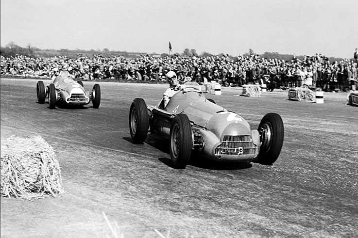
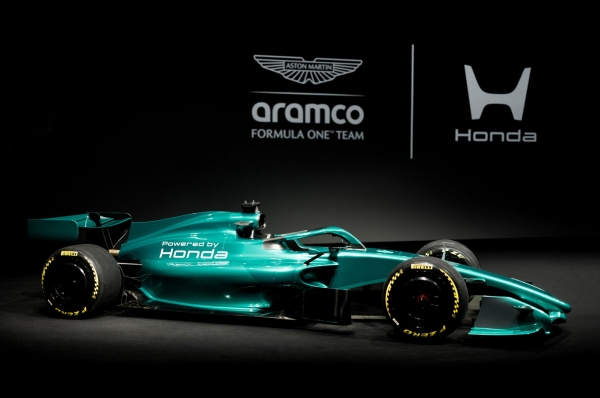

Bevezető
A Formula–1 (F1) a nemzetközi autósport csúcsa: a technológia, a sport és a showbiznisz határterületén fejlődő világbajnoki sorozat, amelyben a szabályok, az üzleti modell és a mnöki innovációk együtt írták a sport történetét. Az alábbi áttekintés a kezdetek ér től a legújabb szabályreformokig mutatja be az F1 fő állomásait.

Eredet és alapok (1920–1946)
Az F1 gyökerei az 1920–30-as évek európai Grand Prix-bajnokságaihoz nyúlnak vissza. A modern „Formula 1” fogalmát a Nemzetközi Automobil Szövetség (FIA) sportbizottsága 1946-ban definiálta, egységesítve a géposztályt és az alapvető műszaki szabályokat – ez ágyazott meg a későbbi világbajnokságnak. Sokáig léteztek nem-világbajnoki F1-futamok is; az utolsót 1983-ban rendezték, részben a növekvő költségek miatt.
Az első világbajnoki évad (1950)
Az FIA 1950-ben indította útjára a Hajtók Világbajnokságát; az első vb-futamot 1950. május 13-án Silverstone-ban rendezték (British Grand Prix / Grand Prix d’Europe), melyet az Alfa Romeóval versenyző Giuseppe „Nino” Farina nyert. A szezon hét versenyből állt, köztük a korabeli szabályok szerint beszámított Indianapolis 500-zal is; Farina lett a sportág első világbajnoka.
Intézményi és kereskedelmi fordulópont: a Concorde-megállapodások
Az 1970-es évek végének FISA–FOCA-hatalmi vitái után 1981. január 19-én, Párizsban, a Place de la Concorde-on írták alá az első „Concorde Agreement”-et, amely stabilizálta a naptárt és a tévés jogdíjak, valamint a bevételek megosztását; később több új változata is született (1987, 1992, 1997, 1998, 2009, 2013, 2021 stb.). Ezek a titkos szerződéscsomagok a professzionalizmust és a kereskedelmi sikerességet szolgálták, a csapatok versenyzési kötelezettségével és a bevételmegosztás kereteivel.
Technikai korszakok I.: a turbók hajnala és csúcsa (1977–1988)
A Renault 1977-ben hozta vissza a turbófeltöltést az F1-be (RS01), amely eleinte megbízhatatlan volt, de néhány év alatt a teljes mezőny átvette. A ’80-as évek közepére az időmérős üzemmódban 1000–1300 lóerőt is megközelített a teljesítmény – az F1 történetének egyik legextrémebb korszaka. 1989-től a szabályalkotók betiltották a turbókat, részben a biztonsági és költségszempontok miatt.
Biztonság középpontban: Imola, 1994 – a változások katalizátora
Az 1994-es San Marinó-i Nagydíj hétvégéjén Rubens Barrichello súlyos balesete után szombaton Roland Ratzenberger, vasárnap Ayrton Senna vesztette életét. A tragédia azonnali reformokat indított el: pályamódosítások, a veszélyes kanyarok átértékelése, kötelező gumifal-tesztek, boxutcai sebességkorlát, fej- és nyakterhelést csökkentő megoldások bevezetése, majd 1999-től kerékkötések (wheel tethers), 2003-tól pedig kötelezővé vált a HANS (Head And Neck Support) rendszer az F1-ben.
A HANS rendszer kötelezővé tétele (2003)
A Dr. Robert Hubbard és Jim Downing által a ’80-as években kifejlesztett HANS a basilaris koponyatörések megelőzését célozza; az FIA 2003-tól írta elő kötelező használatát a Forma–1-ben, kimutathatóan csökkentve a halálos fejsérülések kockázatát.
Stratégiai fordulat: a tankolás betiltása (2010)
A középidőben végrehajtott tankolás 1982-ben tért vissza mint teljesítmény-stratégia, majd évtizedekig alakította a versenyek dinamikáját. A 2000-es évek végére a biztonsági kockázatok (tűzesetek, letépett töltőcsonkok), a komplex és drága töltőrendszerek, illetve a költségcsökkentési törekvések felülkerekedtek: a FIA 2010-től betiltotta a verseny alatti tankolást, így az autóknak teljes távra elegendő üzemanyaggal kell rajtolniuk.
Technikai korszakok II.: a hibrid-éra kezdete (2014– )
A középidőben végrehajtott tankolás 1982-ben tért vissza mint teljesítmény-stratégia, majd évtizedekig alakította a versenyek dinamikáját. A 2000-es évek végére a biztonsági kockázatok (tűzesetek, letépett töltőcsonkok), a komplex és drága töltőrendszerek, illetve a költségcsökkentési törekvések felülkerekedtek: a FIA 2010-től betiltotta a verseny alatti tankolást, így az autóknak teljes távra elegendő üzemanyaggal kell rajtolniuk.
Pénzügyi szabályozás: költségplafon (2021– )
2021-től a technikai és sportkódex mellé a pénzügyi szabályzat is felzárkózott: bevezették a költségplafont, amely a teljesítményre ható kiadások éves korlátozásával (2021: 145 millió USD; 2022: 140 M; 2023-tól 135 M, inflációs korrekcióval) a fenntarthatóságot és a kiegyenlítettebb versenyt szolgálja. A részletszabályok, ellenőrzések és szankciók az FIA pénzügyi szabályzatában szerepelnek.
„Közelebb egymáshoz”: a 2022-es nagy aerodinamikai reform
2022-ben átfogó aerodinamikai újratervezés jött: visszatért a ground effect (Venturi-alagutak a padló alatt), leegyszerűsítették a karosszéria- és szárnyelemeket, eltűntek a bonyolult bargeboardok, új első–hátsó szárnyak és 18 colos kerekek érkeztek. A cél az volt, hogy a mögöttes autó kevesebb leszorítóerőt veszítsen, és könnyebb legyen közel maradni, előzni. A szabályok ezt részletesen rögzítik és a fejlesztési mozgásteret is keretek közé szorítják. [api.fia.com], [fia.com]
Megjegyzés: az első szezonban a FIA/F1 szimulációi és elemzései valóban mérsékelték a „piszkos levegő” hatását (jelentős downforce‑veszteség‑csökkenés), ám a csapatok fejlesztései idővel részben visszahozták a követési nehézségeket – ezért 2026-ra újabb finomhangolás várható.
„Közelebb egymáshoz”: a 2022-es nagy aerodinamikai reform
2022-ben átfogó aerodinamikai újratervezés jött: visszatért a ground effect (Venturi-alagutak a padló alatt), leegyszerűsítették a karosszéria- és szárnyelemeket, eltűntek a bonyolult bargeboardok, új első–hátsó szárnyak és 18 colos kerekek érkeztek. A cél az volt, hogy a mögöttes autó kevesebb leszorítóerőt veszítsen, és könnyebb legyen közel maradni, előzni. A szabályok ezt részletesen rögzítik és a fejlesztési mozgásteret is keretek közé szorítják. [api.fia.com], [fia.com]

Megjegyzés: az első szezonban a FIA/F1 szimulációi és elemzései valóban mérsékelték a „piszkos levegő” hatását (jelentős downforce‑veszteség‑csökkenés), ám a csapatok fejlesztései idővel részben visszahozták a követési nehézségeket – ezért 2026-ra újabb finomhangolás várható.